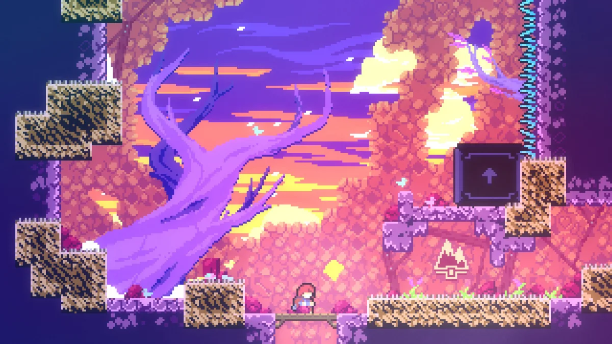
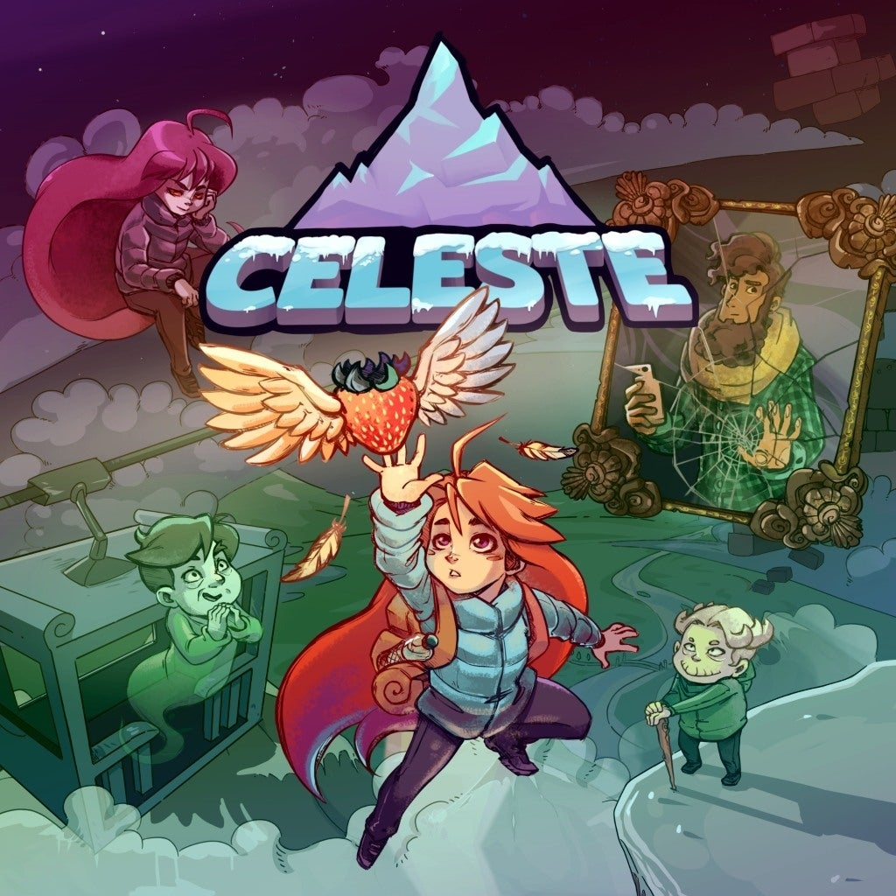

Help Madeline survive her inner demons on her journey to the top of Celeste Mountain, in this super-tight, hand-crafted platformer from the creators of multiplayer classic TowerFall.
- Published by:
- Matt Makes Games Inc.
- Jan 25, 2018
- Genre:
- Action
- Perspective:
- Side view
- Visual:
- 2D Scrolling
- Gameplay:
- Platforming
Celeste is a wonderful little platforming challenge that finds beauty in balance. Its sometimes brutal difficulty is softened by its innovative and inclusive approach to accessibility, thanks to a customisable Assist Mode that allows you to set the parameters. - TrueAchievements

